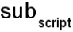
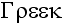

2022bより、OriginはノートウィンドウにおけるOriginリッチテキストシンタックスの使用をサポートします。
リッチテキストの場合、ノートウィンドウには生のテキストモードとレンダリングモードの2つのモードがあります。これらを切り替えるには、メモ：レンダリングモードを使用するか、ショートカットキーCTRL + Mを使用します。
ノートウィンドウにテキストを追加するには、生テキストモードにする必要があります。追加したテキストのスタイルを設定するには、書式ツールバーを使用するか、事前定義された段落スタイルを適用します。
標準ツールバーのズームコンボボックス |
Originのリッチテキストシンタックスに切り替えると、書式ツールバーボタン（ギリシャ文字、上付き文字/下付き文字など）を使用できます。ノートウィンドウでボタンを使用してテキストをフォーマットできます。

ボタンを使用する以外に、次の構文を入力してテキストをフォーマットすることもできます
| 構文 | 説明 | 入力の方法... | 表示結果... |
|---|---|---|---|
| \+(text) | textを上付きとして設定 | super\+(script) | |
| \-(text) | textを下付きとして設定 | sub\-(script) |  |
| \=(text1,text2) | text1を下付きとして設定、text2を上付きとして設定 | script\=(sub,super) | 
|
| \p%pointsize(text) | textの大きさを%倍に変更。 200は2倍、100は大きさの変更なし等 | change\p200(point)size | |
| \i(text) | textを斜体に設定 | \i(italics) | 
|
| \b(text) | textを太字に設定 | \b(bold) | 
|
| \u(text) | textに下線を設定 | \u(underline) | 
|
| \g(text) | textをギリシャ文字に設定 | \g(Greek) |  |
| \ab(text) | textの上にバーを表示 | \ab(X) | |
| \ad(text) | textの上に一点鎖線を表示 | \ad(A) | |
| \at(text) | textの上にティルデを表示 | \at(A) | |
| \(ASCII character code) | 指定したASCII記号を表示 | \(169) | |
| \y(') \y(") |
プライムあるいはダブルプライムを表示。プライムとダブルプライムの組み合わせを表示するためには、\+(\y(')) or \+(\y("))のように上付き文字の表現を使用します。 | \g(c)\=(3,\y(')) | |
| \f:fontname(text) | textをfontnameのフォントを使用して表示 (フォント名は同定可能な範囲で略記可) | \f:Wide Latin(font) | 
|
| \cnumber(text) | ORIGIN.INIファイルの色リストのnumberで示される色でtextを表示 | \c2(red) | |
| \x(unicode number) | Unicode文字を表示します。 |
\x(03b8) | |
| \sc | 連続するスペースが複数ある場合でも、1つの条件付き水平スペースを文字列に挿入します。 |
この例では、@LD3 と @LD4 が存在しないと仮定しているため、2 つのスペースが存在します。\scは1つのスペースしか作成しません。
\b(%(1Y,@LL)\sc%(1Y,@LD3)\sc%(1Y,@LD4)\sc(%(1Y,@LU))) |
LName (Unit) |
Note：上記の表に記載されていないエスケープシーケンスもあります。詳細については、このページを参照してください。
Originリッチテキストシンタックスでノートウィンドウを編集する場合、ノートウィンドウのメモメインメニューまたはコンテキストメニューでグラフ、ワークシートのセル、変数リンク、ワークシートを追加できるだけでなく、ファイル/ Webからシンボルマップ、LaTeX方程式、リンク、画像をノートに挿入することもできます。
グラフ/画像ブラウザダイアログが表示されたら、挿入するグラフを選択します。デフォルトでは、グラフの幅は300です。そして、システム変数@IMGAを使用して、デフォルトのグラフの幅の値を変更できます。
または、
\img(Graph1, w=500)

または、
%([Book1]Sheet1!,A,2,W)
または、
\img([Book4]Sheet1)
基本のテーブルを構成するための新規テーブルダイアログを開きます。


タブでソートされた文字で簡易版シンボルマップを開きます。
シンボルマップの使用に関しては、シンボルマップとキャラクターマップを参照してください。
 をクリックしてOriginのフィット関数のリスト（ユーザ定義関数を含む）を開きます。上部のボックスで関数を選択するか方程式を入力すると、下部のパネルでレンダリングされたプレビューが表示されます。この文書も参照して下さい。
をクリックしてOriginのフィット関数のリスト（ユーザ定義関数を含む）を開きます。上部のボックスで関数を選択するか方程式を入力すると、下部のパネルでレンダリングされたプレビューが表示されます。この文書も参照して下さい。その他のサンプルについては、メモ: サンプルのロード: LaTeX Equations.txtメニューを選択してください。
Note: Origin 2023bより前のバージョンでは、挿入: LaTeX数式メニューを選択するとLaTeX Equation Editorアプリが開いていました (インストールされていない場合はインストールを促すメッセージが開きます)。
表示するテキストとリンクを入力するダイアログボックスが開きます。入力できるリンクにはいくつか種類があります。例として、
ほかにも、リンクのテキストボックスに簡単なLabTalkコマンドを入力・実行することもできます（例：labtalk://"ty -b[Hello World!]」）

ノートウィンドウの生テキストモードで確認できる構文例
\link(labtalk://"ty -b [Hello World!]", Hello World!)
レンダリングモードでノートウィンドウのテキストをクリックすると、”Hello World”というアテンションボックスが表示されます。
ダイアログを開いて画像ファイルを選択します。
ノートウィンドウの生テキストモードで確認できる構文例
\img(file://"%@JSamples\Image Processing and Analysis\car.bmp", w=1000)
上の例にある%@J 文字列レジスタはOriginのEXEフォルダのパスを返します。 |
ダイアログを開いて、Web画像の画像リンクを指定します（ヒント：ブラウザで画像を右クリックし、画像アドレスをコピー、画像リンクをコピーなどを選択）。

ノートウィンドウの生テキストモードで確認できる構文例
\img(https://www.originlab.com/images/header_logo.png, w=200)
Originでは、組み込みのテキストスタイルを使用して段落に適用できます。
カーソルが段落内にあるときに右クリックしてメニューを開くと、リストから段落の書式を選択できます。
テキストスタイルの変更ツールを使用して、新しいスタイルを定義することもできます。
| 変更するスタイル | リストからスタイルを選択して変更します。
<新規>...を選択すると、 新規スタイル名ダイアログがポップアップします。また、新しいスタイルの名前を定義できます。 |
|---|---|
| フォントの書体 | このドロップダウンリストから段落のフォント形式を選択します。 |
| サイズ倍率(%) | テキストサイズ(ポイント単位)を入力または選択します。 |
| 色 | このドロップダウンリストから、テキストの色を選択します。カスタムカラーの定義をクリックすると、色の設定ダイアログが開き、RGBを指定するとカスタムカラーを作成できます。 |
| 配置 | このチェックボックスをオンにすると、段落の配置として左、中央、右を選択できます。 |
| フォントスタイル |
|
| 間隔 |
|
| インデント（フォントサイズの%） |
|
| リスト | このテキストスタイルを箇条書きまたは番号付きリストで設定します。 |
| 構文 | 説明 | サンプル |
|---|---|---|
| color または c | カラーインデックスで段落テキストの色を指定します。
組み込みカラーリストのカラーインデックスを参照してください。色を指定しない場合、テキストはデフォルトで黒になります。 |
color:6 |
| p | テキストサイズのパーセンテージをポイント単位で指定します。 | p:175 |
| f | フォント名で段落テキストのフォントタイプを指定します | f:Times New Roman |
| lineSpacing | テキスト行の間隔のパーセンテージを指定します。 | lineSpacing:100 |
| beforeSpacing | 段落の前の間隔のパーセンテージを指定します | beforeSpacing:150 |
| afterSpacing | 段落の後の間隔のパーセンテージを指定します | afterSpacing:200 |
| leftindent | 段落の左インデントのフォントサイズのパーセンテージを指定します。 | leftindent:100 |
| rightindent | 段落の右インデントのフォントサイズのパーセンテージを指定します。 | rightindent:400 |
| align | 段落の配置を左、中央、右に設定します。 | align:right |
| italic | 段落テキストを斜体に設定します | italic |
組み込みの段落スタイルを使用して段落のリスト（箇条書きリスト/番号付きリスト）を設定するほかに、表記法を使用して段落リストとその他カスタムのリストプロパティを設定できます。
| プロパティ | 説明 | 箇条書きまたは番号付きリストを使用 | 値 |
|---|---|---|---|
| list | リストのタイプとレベルを示すリスト名を指定します。 | -- |
|
| listbullet | 箇条書きのスタイルを指定します。 | 箇条書き | bulletのスタイルを指定しない場合、箇条書きはデフォルトで黒い点になります。
|
| listnumber | 番号付きのスタイルを指定します。 | 番号付き |
|
| liststart | 番号付きリストの開始番号インデックスを指定します | 番号付き | numeric |
段落リストにこれらの表記法を使用し、テキストの色、箇条書きのスタイル、およびリストの数値テキスト形式を編集します。
\p{{list:number;color:1}}({Text 1}) \p{{list:number;color:2}}({Text 2}) \p{{list:number;color:3}}({Text 3}) |

|
\p{{list:number;listnumber:(%d)}}({Text 1}) \p{{list:number;listnumber:(%d)}}({Text 2}) \p{{list:number;listnumber:(%d)}}({Text 3}) |

|
\p{{list:number;listnumber:(%c)}}({Text 1}) \p{{list:number;listnumber:(%c)}}({Text 2}) \p{{list:number;listnumber:(%c)}}({Text 3}) |

|
Note：2つの段落リストの間に非リスト項目（空白行、段落、グラフ、画像）を挿入すると、番号インデックスが崩壊します。
|
listプロパティには、bullet, bullet1, bullet2, number, number1, number2を含む6つの値があります。
\p{{list:number1}}({Level 1}) \p{{list:number2}}({Level 2}) \p{{list:number }}({Level 3}) |

|
\p{{list:bullet2}}({Level 1}) \p{{list:bullet }}({Level 2}) \p{{list:bullet1}}({Level 3}) |

|
\p{{list:number}}({Level 1- Text 1}) \p{{list:number}}({Level 1- Text 2}) \p{{list:bullet;color:2}}({Level 2- AA}) \p{{list:bullet;color:2}}({Level 2- BB}) \p{{list:number2;color:3}}({Level 3- Text 1}) \p{{list:number1;color:4; listnumber:(%d)}}({Level 4- Text 1}) \p{{list:bullet1;color:6; listbullet:white bullet}}({Level 5- aa}) \p{{list:bullet1;color:6; listbullet:white bullet}}({Level 5- bb}) \p{{list:number1;color:4; listnumber:(%d)}}({Level 4- Text 2}) \p{{list:bullet1;color:6; listbullet:white bullet}}({Level 5- A1}) \p{{list:bullet1;color:6; listbullet:white bullet}}({Level 5- A2}) \p{{list:bullet2;color:12; listbullet:triangle}}({Level 6- a1}) \p{{list:number}}({Level 1- Text 3}) |

|
レベル1のサンプルについては、上記のセクションのヒントを参照してください。ここでは、レベル2に非リスト項目を挿入する方法について説明します。liststartプロパティを使用して、再起動リストに必要なインデックスを定義する こともできます。
\p{{list:number}}({Level 1- Text 1}) \p{{list:number}}({Level 1- Text 2}) \p{{list:number1;color:4}}({Level 2- AA}) \p{{list:number1;color:4}}({Level 2- BB}) \p{{color:2}}({Not a list item}) \p{{list:number|number1;color:4;liststart:2|3}}({Level 2- CC}) \p{{list:number1;color:4}}({Level 2- DD}) \p{{list:number}}({Level 1- Text 3}) |

|
ノートウィンドウのコンテンツを印刷できます。あるいは、Microsoft Print to PDFなどのサードパーティドライバを使用してPDFに印刷できます。
見栄えを良くするには、次の設定に注意する必要があります。
note.width (単位 = in/cmなど)で制御されています。デフォルト = 0で、制御なしの幅に対応します。 note.width = 0) 場合、ノートウィンドウのページ幅は用紙サイズ - 余白にほぼ等しくなります。これにより、PDFまたは紙で良い印刷結果が得られるはずです。note.widthを指定する場合は、用紙サイズ - 余白を超えないようにしてください。余白を超えると、テキストが切り取られる可能性があります。